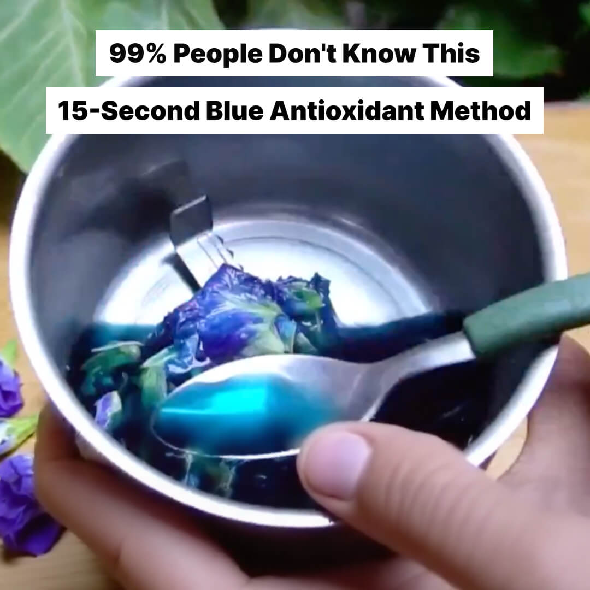
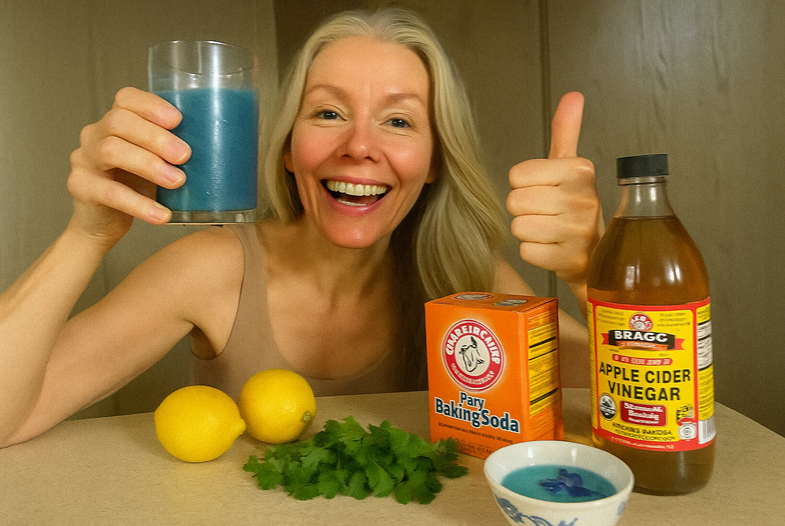

"15-second blue antioxidant method" Transformed My Skin
Gave Me My Confidence — and My Skin — Back
Hi, I'm Susan, and I'm 58 years old.
I'm sharing my story because, honestly, I never thought I would feel this good again — in my skin and in my body.
It's all thanks to a simple “15-second blue antioxidant method” I discovered almost by accident.
But my life wasn't always this way.
After turning 40, my skin started changing faster than I could keep up with.
I noticed fine lines deepening into wrinkles, dark spots creeping across my cheeks, and a tired, saggy look in my jawline and neck.
It wasn't just my face — my digestion became sluggish too, and I constantly felt bloated and heavy.
Like many women, I tried everything — expensive creams, painful facials, complicated skincare routines… nothing gave lasting results.
It was heartbreaking. No matter what I tried, I still looked older than I felt.
The final blow came during a dinner with friends when someone casually asked if my younger sister was actually my daughter. I smiled politely, but inside, I felt crushed.
I knew I had to find something that worked — and fast.

One afternoon, while researching natural skin remedies online, I stumbled across a doctor's video about a “15-second blue antioxidant method” that rejuvenates the skin by healing the gut from within.
It sounded different from everything else I had tried before — no crazy diets, no endless skincare steps, no surgeries.
Skeptical but desperate, I decided to try it.
After all, it was just a few seconds every morning. What could I lose?
After just a few days, I noticed real changes.
✅ My bloating almost disappeared.
✅ My skin started to regain its glow — it looked a little fresher, smoother, and more alive.
✅ I had more energy throughout the day — no more afternoon crashes.
I couldn't believe it. I hadn't changed anything else in my routine — just the 15-second morning ritual.
Things only got better.
✅ My fine lines started softening.
✅ I could see dark spots on my cheeks fading.
✅ I woke up feeling lighter, with a noticeable difference in how my clothes fit around my waist.
Friends started asking what I was doing — and for the first time in years, I smiled with pride when I looked in the mirror.
By the end of the first month, the transformation was undeniable.
✅ My wrinkles were much less visible.
✅ My jawline felt firmer.
✅ I had lost nearly 10 pounds — without strict dieting or hard workouts.
✅ My digestion felt completely reset — no more bloating, no discomfort.
And the best part? My skin looked radiant, firm, and youthful — like I had turned back the clock by 10 or even 15 years.
I no longer hid behind makeup or long sleeves.
I felt vibrant, confident, and alive.

Looking back, I'm so grateful I gave this simple method a chance.
A few seconds a day completely transformed not just my appearance — but my happiness, my confidence, my life.
If you're struggling with tired, aging skin, stubborn bloating, or feeling like nothing ever works…
I can't recommend the “15-second blue antioxidant method” enough.
It's not a miracle
It's real science
And it works.